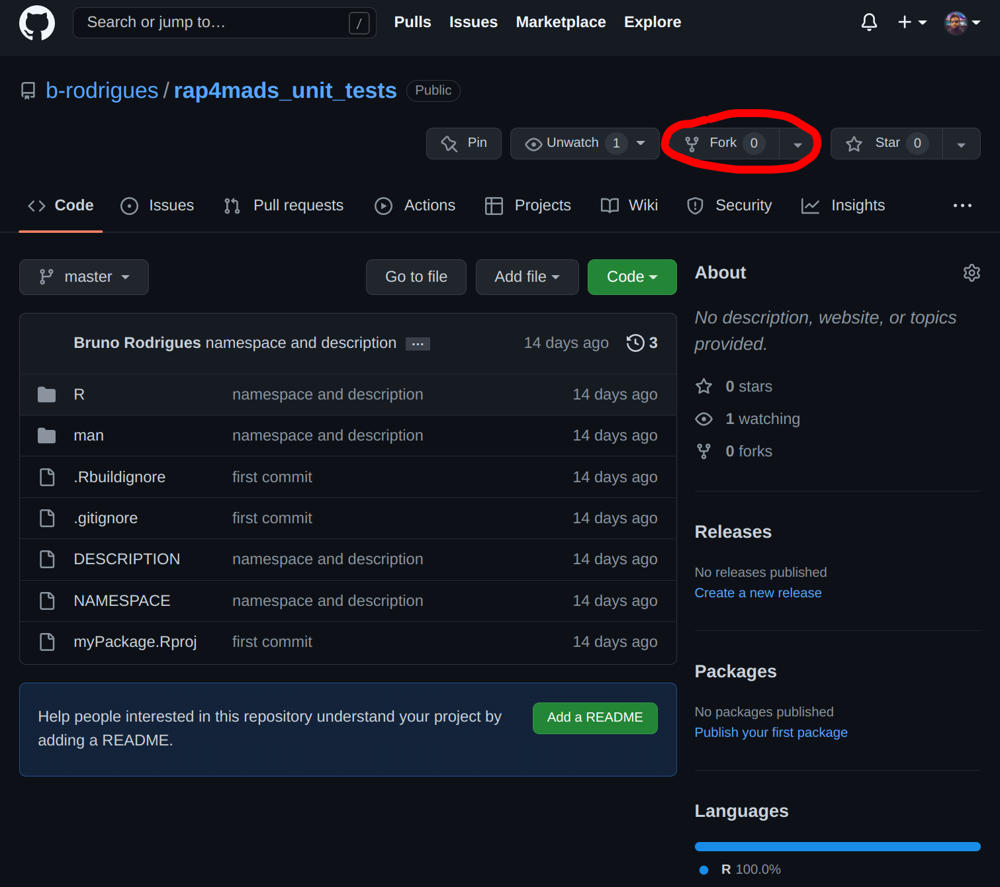

5 Unit tests
What you’ll have learned by the end of the chapter: what unit tests are, how to write them, and how to test your package thoroughly.
5.1 Introduction
It might not have seemed like it, but developing our own package was actually the first step in writing reproducible code. Packaged code is easy to share, and much easier to run than code that lives inside scripts. When you share code, be it with future you or others, you have a responsibility to ship high quality code. Unit tests are one way to ensure that your code works as intented, but it is not a panacea. But if you write short, well-documented functions, and you package them, and test them thoroughly, you are on the right track for success.
But what are unit tests? Unit tests are pieces of code that test other pieces of code (called units in this context). It turns out that functions are units of code, and that makes testing them quite easy. I hope that you are starting to see the pieces coming all together: I introduced you to functional programming and insisted that you write your code as a sequence of functions calls, because it makes it easier to package and document everything. And now that your code lives inside a package, as a series of functions, it will be very easy to test these functions (or units of code).
5.2 Testing your package
To make sure that each one of us starts with the exact same package and code, you will first of all fork the following repository that you can find here.

Forking the repository will add a copy of the repository to your github account. You can now clone your fork of the repo (make sure you clone using the ssh link!) and start working!
Because our code is packaged, starting to write unit tests will be very easy. For this, open RStudio and make sure your package’s project is opened:

In order to set up the required files and folders for unit testing, run the following line in the R console:
usethis::use_test("clean_unemp")You should see a folder called tests appear inside the package. Inside tests, there is another folder called testthat, and inside this folder you should find a file called test-clean_unemp.R. This file should contain an example:
test_that("multiplication works", {
expect_equal(2 * 2, 4)
})This is quite self-explanatory; test_that() is the function that we are going to use to write tests. It takes a string as an argument, and a test. For the string write an explanatory name. This will make it easier to find the test if it fails. expect_equal() is a function that tests the equality between its arguments. On one side we have 2 * 2, and on the other, 4. All our tests will look somewhat like this. There are many expect_ functions, that allow you to test for many conditions. You can take a look at {testthat}’s function reference for a complete list.
So, what should we test? Well, here are several ideas:
- Is the function returning an expected value for a given input?
- Can the function deal with all kinds of input? What happens if an unexpected input is provided?
- Is the function failing as expected for certain inputs?
- Is the function dealing with corner cases as intended?
Let’s try to write some tests for our clean_unemp() function now, and start to consider each of these questions.
5.2.1 Is the function returning an expected value for a given input?
Let’s start by testing if our function actually returns data for the Grand-Duchy of Luxembourg if the user provides a correct regular expression. Add these lines to the script (and remove the example test while you’re at it):
unemp_2013 <- readr::read_csv("https://raw.githubusercontent.com/b-rodrigues/modern_R/master/datasets/unemployment/unemp_2013.csv")
test_that("selecting the grand duchy works", {
returned_value <- clean_unemp(
unemp_2013,
grepl("Grand-D.*", commune),
active_population)
expected_value <- tibble::as_tibble(
list("year" = 2013,
"commune" = "Grand-Duche de Luxembourg",
"active_population" = 242694))
expect_equal(returned_value, expected_value)
})So what’s going on here? First, I need to get the data. I load the data outside of the test, so it’ll be available to every test afterwards as well. Then, inside the test, I need to define two more variables: the actual value returned by the function, and the value that we expect. I need to create this value by hand, and I do so using the tibble::as_tibble() function. This function takes a list as an argument and converts it to a tibble. I did not explain what tibbles are yet: tibbles are basically the same as a data frame, but have a nicer print method, and other niceties. In practice, you don’t need to think about tibbles too much, but here you need to be careful: clean_unemp() returns a tibble, because that’s what {dplyr} functions return by default. So if in your test you compare a tibble to a data.frame, your test will fail, because their classes are not equal. So I need to define my expected value as a tibble for the test to pass.
You can now save the script, and press CTRL-SHIFT-T to run the test. The test should pass, if not, there’s either something wrong with your function, with the inputs you provided to it, or with the expected value. You can keep adding tests to this script, to cover every possible use case:
test_that("selecting cantons works", {
returned_value <- clean_unemp(
unemp_2013,
grepl("Canton", commune),
active_population)
expected_value <- readr::read_csv("test_data_cantons.csv")
expect_equal(returned_value, expected_value)
})In the test above, I cannot write the expected value by hand. So what I did instead was run my function in a terminal, and save the output in a csv file. I used the following code for this:
clean_unemp(unemp_2013,
grepl("Canton", commune),
active_population) %>%
readr::write_csv("tests/testthat/test_data_cantons.csv")I inspected this output to make sure everything was correct. I can now keep this csv file and test my function against it. Should my function fail when tested against it, I know that something is wrong. We can do the same for communes. First, save the “ground truth” in a csv file:
clean_unemp(unemp_2013,
!grepl("(Canton|Grand-D.*)", commune),
active_population) %>%
readr::write_csv("tests/testthat/test_data_communes.csv")Then, we can use this csv file in our tests:
test_that("selecting communes works", {
returned_value <- clean_unemp(
unemp_2013,
!grepl("(Canton|Grand-D.*)", commune),
active_population)
expected_value <- readr::read_csv("test_data_communes.csv")
expect_equal(returned_value, expected_value)
})We could even add a test for a specific commune:
test_that("selecting one commune works", {
returned_value <- clean_unemp(
unemp_2013,
grepl("Kayl", commune),
active_population)
expected_value <- tibble::as_tibble(
list("year" = 2013,
"commune" = "Kayl",
"active_population" = 3863))
expect_equal(returned_value, expected_value)
})So your final script would look something like this:
unemp_2013 <- readr::read_csv("https://raw.githubusercontent.com/b-rodrigues/modern_R/master/datasets/unemployment/unemp_2013.csv", show_col_types = FALSE)
test_that("selecting the grand duchy works", {
returned_value <- clean_unemp(
unemp_2013,
grepl("Grand-D.*", commune),
active_population)
expected_value <- tibble::as_tibble(
list("year" = 2013,
"commune" = "Grand-Duche de Luxembourg",
"active_population" = 242694))
expect_equal(returned_value, expected_value)
})
test_that("selecting cantons work", {
returned_value <- clean_unemp(
unemp_2013,
grepl("Canton", commune),
active_population)
expected_value <- readr::read_csv("test_data_cantons.csv", show_col_types = FALSE)
expect_equal(returned_value, expected_value)
})
test_that("selecting communes works", {
returned_value <- clean_unemp(
unemp_2013,
!grepl("(Canton|Grand-D.*)", commune),
active_population)
expected_value <- readr::read_csv("test_data_communes.csv", show_col_types = FALSE)
expect_equal(returned_value, expected_value)
})
test_that("selecting one commune works", {
returned_value <- clean_unemp(
unemp_2013,
grepl("Kayl", commune),
active_population)
expected_value <- tibble::as_tibble(
list("year" = 2013,
"commune" = "Kayl",
"active_population" = 3863))
expect_equal(returned_value, expected_value)
})5.2.2 Can the function deal with all kinds of input?
What should happen if your function gets an unexpected input? Let’s write a unit test and then see if it passes. For example, what if the user enters a commune name that is not in Luxembourg? We expect the data frame to be empty, so let’s write a test for that
test_that("wrong commune name", {
returned_value <- clean_unemp(
unemp_2013,
grepl("Paris", commune),
active_population)
expected_value <- tibble::as_tibble(
list("year" = numeric(0),
"commune" = character(0),
"active_population" = numeric(0)))
expect_equal(returned_value, expected_value)
})This test reveals something interesting: your function returns an empty data frame, but the user might not understand what’s wrong. Maybe we could add a message to inform the user? We could write something like:
clean_unemp <- function(unemp_data, level, col_of_interest){
result <- unemp_data |>
janitor::clean_names() |>
dplyr::filter({{level}}) |>
dplyr::select(year, commune, {{col_of_interest}})
if(nrow(result) == 0) {
warning("The returned data frame is empty. This is likely because the `level` argument supplied does not match any rows in the original data.")
}
result
}Replace the clean_unemp() function from your package with this one, and rerun the tests. The test should still pass, but a warning will be shown. We can test for this as well; is the warning thrown? Let’s write the required test for it:
test_that("wrong commune name: warning is thrown", {
expect_warning({
clean_unemp(
unemp_2013,
grepl("Paris", commune),
active_population)
}, "This is likely")
})expect_warning() needs the expression that should raise the warning, and a regular expression. I’ve used the string “This is likely”, which appears in the warning. This is to make sure that the correct warning is raised. Should another warning be thrown, the test will fail, and I’ll know that something’s wrong (try to change the regular expression and rerun the test, you see that it’ll fail).
5.3 Back to developing again
Now might be a good time to stop writing tests and think a little bit. While writing these tests, and filling the shoes of your users, you might have realized that your function might not be that great. We are asking users to enter a regular expression to filter data, which is really not great nor user-friendly. And this is because the data we’re dealing with is actually not clean, because the same column mixes three different regional levels. For example, what if the users wants to take a look at the commune “Luxembourg”?
clean_unemp(
unemp_2013,
grepl("Luxembourg", commune),
active_population)# A tibble: 3 × 3
year commune active_population
<dbl> <chr> <dbl>
2013 Grand-Duche de Luxembourg 242694
2013 Canton Luxembourg 68368
2013 Luxembourg 43368
So the user gets back three rows; that’s because there’s the country, the canton and the commune of Luxembourg. Of course the user can now filter again to just get the commune. But this is not a good interface.
What we should do instead is clean the input data. And while we’re at it, we could also provide the data directly inside the package. This way users get the data “for free” once they install the package. Let’s do exactly that. To package data, we first need to create the data-raw folder. This can be done with the following call:
usethis::use_data_raw()There’s a script called DATASET.R inside the data-raw folder. This is the script that we should edit to clean the data. Let’s write the following lines in it:
## code to prepare `DATASET` dataset goes here
unemp_2013 <- readr::read_csv("https://raw.githubusercontent.com/b-rodrigues/modern_R/master/datasets/unemployment/unemp_2013.csv")
unemp_2014 <- readr::read_csv("https://raw.githubusercontent.com/b-rodrigues/modern_R/master/datasets/unemployment/unemp_2014.csv")
unemp_2015 <- readr::read_csv("https://raw.githubusercontent.com/b-rodrigues/modern_R/master/datasets/unemployment/unemp_2015.csv")
library(dplyr)
clean_data <- function(x){
x %>%
janitor::clean_names() %>%
mutate(level = case_when(
grepl("Grand-D.*", commune) ~ "Country",
grepl("Canton", commune) ~ "Canton",
!grepl("(Canton|Grand-D.*)", commune) ~ "Commune"
),
commune = ifelse(grepl("Canton", commune),
stringr::str_remove_all(commune, "Canton "),
commune),
commune = ifelse(grepl("Grand-D.*", commune),
stringr::str_remove_all(commune, "Grand-Duche de "),
commune),
) %>%
select(year,
place_name = commune,
level,
everything())
}
my_datasets <- list(
unemp_2013,
unemp_2014,
unemp_2015
)
unemp <- purrr::map_dfr(my_datasets, clean_data)
usethis::use_data(unemp, overwrite = TRUE)Running this code creates a dataset called unemp, which users of your package will be able to load using data("unemp") (after having loaded your package). The now contains a new column called level which will make filtering much easier. After usethis::use_data() is done, we can read following message in the R console:
✔ Saving 'unemp' to 'data/unemp.rda'
• Document your data (see 'https://r-pkgs.org/data.html')We are invited to document our data. To do so, create and edit a file called data.R in the R directory:
#' Unemployement in Luxembourg data
#'
#' A tidy dataset of unemployment data in Luxembourg.
#'
#' @format ## `who`
#' A data frame with 7,240 rows and 60 columns:
#' \describe{
#' \item{year}{Year}
#' \item{place_name}{Name of commune, canton or country}
#' \item{level}{Country, Canton, or Commune}
#' \item{total_employed_population}{Total employed population living in `place_name`}
#' \item{of_which_wage_earners}{... of which are wage earners living in `place_name`}
#' \item{of_which_non_wage_earners}{... of which are non-wage earners living in `place_name`}
#' \item{unemployed}{Total unemployed population living in `place_name`}
#' \item{active_population}{Total active population living in `place_name`}
#' \item{unemployement_rate_in_percent}{Unemployement rate in `place_name`}
#' ...
#' }
#' @source <https://is.gd/e6wKRk>
"unemp"You can now rebuild the document using CTRL-SHIFT-D and reload the package using CRTL-SHIFT-L. You should now be able to load the data into your session using data("unemp").
We can now change our function to accommodate this new data format. Let’s edit our function like this:
#' Easily filter unemployment data for Luxembourg
#' @param unemp_data A data frame containing unemployment data for Luxembourg.
#' @param year_of_interest Optional: The year that should be kept. Leave empty to select every year.
#' @param place_name_of_interest Optional: The name of the place of interest: leave empty to select every place in `level_of_interest`.
#' @param level_of_interest Optional: The level of interest: one of `Country`, `Canton`, `Commune`. Leave empty to select every level with the same place name.
#' @param col_of_interest A column of the `unemp` data frame that you wish to select.
#' @importFrom janitor clean_names
#' @importFrom dplyr filter select
#' @importFrom rlang quo `!!`
#' @return A data frame
#' @export
#' @details
#' Users can filter data on two variables: the name of the place of interest, and the level of interest.
#' By leaving the argument `place_name_of_interest` empty
#' @examples
#' # Filter on cantons
#' clean_unemp(unemp,
#' level_of_interest = "Canton",
#' col_of_interest = active_population)
#' # Filter on a specific commune
#' clean_unemp(unemp,
#' place_name_of_interest = "Luxembourg",
#' level_of_interest = "Commune",
#' col_of_interest = active_population)
#' # Filter on every level called Luxembourg
#' clean_unemp(unemp,
#' place_name_of_interest = "Luxembourg",
#' col_of_interest = active_population)
clean_unemp <- function(unemp_data,
year_of_interest = NULL,
place_name_of_interest = NULL,
level_of_interest = NULL,
col_of_interest){
if(is.null(year_of_interest)){
year_of_interest <- quo(year)
}
if(is.null(place_name_of_interest)){
place_name_of_interest <- quo(place_name)
}
if(is.null(level_of_interest)){
level_of_interest <- quo(level)
}
result <- unemp_data |>
janitor::clean_names() |>
dplyr::filter(year %in% !!year_of_interest,
place_name %in% !!place_name_of_interest,
level %in% !!level_of_interest) |>
dplyr::select(year, place_name, level, {{col_of_interest}})
if(nrow(result) == 0) {
warning("The returned data frame is empty. This is likely because the `place_name_of_interest` or `level_of_interest` argument supplied does not match any rows in the original data.")
}
result
}There’s a lot more going on now: if you don’t get everything that’s going on in this function, don’t worry, it is not that important for what follows. But do try to understand what’s happening, especially the part about the optional arguments.
5.4 And back to testing
Running our tests now will obviously fail:
➤ devtools::test('.')
ℹ Testing myPackage
✔ | F W S OK | Context
✖ | 6 0 | clean_unemp [0.3s]
──────────────────────────────────────────────────────────────────────────────────────────────────────────────────────────────
Error (test-clean_unemp.R:5:3): selecting the grand duchy works
Error in `is.factor(x)`: object 'commune' not found
Backtrace:
1. myPackage::clean_unemp(...)
at test-clean_unemp.R:5:2
2. base::grepl("Grand-D.*", commune)
at myPackage/R/functions.R:29:2
3. base::is.factor(x)
Error (test-clean_unemp.R:21:3): selecting cantons work
Error in `is.factor(x)`: object 'commune' not found
Backtrace:
1. myPackage::clean_unemp(...)
at test-clean_unemp.R:21:2
2. base::grepl("Canton", commune)
at myPackage/R/functions.R:29:2
3. base::is.factor(x)
Error (test-clean_unemp.R:34:3): selecting communes works
Error in `is.factor(x)`: object 'commune' not found
Backtrace:
1. myPackage::clean_unemp(...)
at test-clean_unemp.R:34:2
2. base::grepl("(Canton|Grand-D.*)", commune)
at myPackage/R/functions.R:29:2
3. base::is.factor(x)
Error (test-clean_unemp.R:47:3): selecting one commune works
Error in `is.factor(x)`: object 'commune' not found
Backtrace:
1. myPackage::clean_unemp(unemp_2013, grepl("Kayl", commune), active_population)
at test-clean_unemp.R:47:2
2. base::grepl("Kayl", commune)
at myPackage/R/functions.R:29:2
3. base::is.factor(x)
Error (test-clean_unemp.R:63:3): wrong commune name
Error in `is.factor(x)`: object 'commune' not found
Backtrace:
1. myPackage::clean_unemp(unemp_2013, grepl("Paris", commune), active_population)
at test-clean_unemp.R:63:2
2. base::grepl("Paris", commune)
at myPackage/R/functions.R:29:2
3. base::is.factor(x)
Error (test-clean_unemp.R:80:3): wrong commune name: warning is thrown
Error in `is.factor(x)`: object 'commune' not found
Backtrace:
1. testthat::expect_warning(...)
at test-clean_unemp.R:80:2
8. base::grepl("Paris", commune)
at myPackage/R/functions.R:29:2
9. base::is.factor(x)
──────────────────────────────────────────────────────────────────────────────────────────────────────────────────────────────
══ Results ═══════════════════════════════════════════════════════════════════════════════════════════════════════════════════
Duration: 0.4 s
[ FAIL 6 | WARN 0 | SKIP 0 | PASS 0 ]
Warning message:
── Conflicts ────────────────────────────────────────────────────────────────────────────────────────── myPackage conflicts
──
✖ `clean_unemp` masks `myPackage::clean_unemp()`.
ℹ Did you accidentally source a file rather than using `load_all()`?
Run `rm(list = c("clean_unemp"))` to remove the conflicts.
> At this stage, it might be a good idea to at least commit. Maybe let’s not push yet, and only push once the tests have been rewritten to pass. Commit from RStudio or from a terminal, the choice is yours. We now have to rewrite the tests, to make them pass again. We also need to recreate the csv files for some of the tests, and will probably need to create others. This is what the script containing the tests could look like once you’re done:
test_that("selecting the grand duchy works", {
returned_value <- clean_unemp(
unemp,
year_of_interest = 2013,
level_of_interest = "Country",
col_of_interest = active_population) |>
as.data.frame()
expected_value <- as.data.frame(
list("year" = 2013,
"place_name" = "Luxembourg",
"level" = "Country",
"active_population" = 242694)
)
expect_equal(returned_value, expected_value)
})
test_that("selecting cantons work", {
returned_value <- clean_unemp(
unemp,
year_of_interest = 2013,
level_of_interest = "Canton",
col_of_interest = active_population) |>
as.data.frame()
expected_value <- read.csv("test_data_cantons.csv")
expect_equal(returned_value, expected_value)
})
test_that("selecting communes works", {
returned_value <- clean_unemp(
unemp,
year_of_interest = 2013,
level_of_interest = "Commune",
col_of_interest = active_population) |>
as.data.frame()
expected_value <- read.csv("test_data_communes.csv")
expect_equal(returned_value, expected_value)
})
test_that("selecting one commune works", {
returned_value <- clean_unemp(
unemp,
year_of_interest = 2013,
place_name_of_interest = "Kayl",
col_of_interest = active_population) |>
as.data.frame()
expected_value <- as.data.frame(
list("year" = 2013,
"place_name" = "Kayl",
"level" = "Commune",
"active_population" = 3863))
expect_equal(returned_value, expected_value)
})
test_that("wrong commune name", {
returned_value <- clean_unemp(
unemp,
year_of_interest = 2013,
place_name_of_interest = "Paris",
col_of_interest = active_population) |>
as.data.frame()
expected_value <- as.data.frame(
list("year" = numeric(0),
"place_name" = character(0),
"level" = character(0),
"active_population" = numeric(0)))
expect_equal(returned_value, expected_value)
})
test_that("wrong commune name: warning is thrown", {
expect_warning({
clean_unemp(
unemp,
year_of_interest = 2013,
place_name_of_interest = "Paris",
col_of_interest = active_population)
}, "This is likely")
})Once you’re done, commit and push your changes.
You should now have a pretty good intuition about unit tests. As you can see, unit tests are not just useful to make sure that changes that get introduced in our functions don’t result in regressions in our code, but also to actually improve our code. Writing unit tests allows us to fill the shoes of our users and rethink our code.
A little sidenote before continuing; you might want to look into code coverage using the {covr} package. This package helps you identify code from your package that is not tested yet. The goal of course being to improve the coverage as much as possible! Take a look at {cover}’s website to learn more.
Ok, one final thing; let’s say that we’re happy with our package. To actually use it in other projects we have to install it to our library. To do so, make sure RStudio is inside the right project, and press CTRL-SHIFT-B. This will install the package to our library.